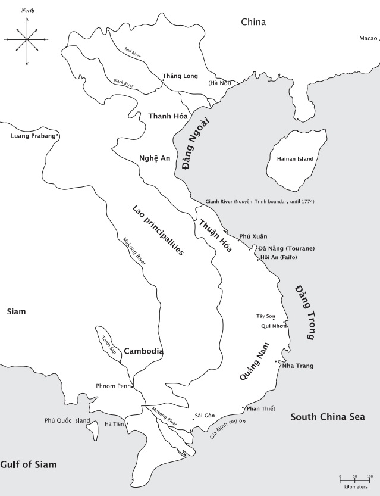

Mùa xuân năm 1773, một đạo quân nhỏ gồm những bộ tộc sống ở vùng cao và nông dân ở vùng đồng bằng mở đường đi xuống từ vùng cao nguyên An Khê, nơi ngày nay là vùng Nam Trung Việt Nam, để tấn công phủ lỵ Qui Nhơn* có tường thành bao quanh, cầm đầu đạo quân này là một người buôn trầu cau và làm biện lại, tên Nguyễn Nhạc. Không tìm ra phương kế tấn công trực diện vào thành, lực lượng nổi dậy sử dụng một mưu chước. Họ giả vờ bắt người cầm đầu (Nguyễn Nhạc) bỏ vào cũi và giải giao ông ta cho quan phủ, ông này cho giam Nhạc trong thành như một tù nhân. Đêm hôm đó, Nhạc tự giải thoát và mở cổng thành cho đạo quân của ông ta đang chờ sẵn. Những kẻ nổi dậy nhanh chóng vô hiệu hóa lực lượng bảo vệ thành, đốt cháy doanh trại, khiến quan Tuần phủ hoảng sợ bỏ chạy*. Thắng lợi củng cố lòng tự tin, quân nổi dậy nhanh chóng tiến đánh các mục tiêu khác dọc theo bờ biển. Khi họ di chuyển về vùng quê, bước dưới một ngọn cờ to màu đỏ, quân lính đội khăn màu đỏ và tạo ra những tiếng động lớn nhằm đe dọa đối phương. Đạo quân của Nguyễn Nhạc tịch thu tài sản của những người giàu có bất hợp tác với họ và mang chia cho những người nông dân nghèo khổ vốn coi họ như những “kẻ cướp nhân đức và giàu lòng từ thiện*”.
Chuỗi sự kiện này đánh dấu sự khỏi đầu của một trong những thời kỳ quan trọng nhất trong lịch sử Việt Nam, thời kỳ mà sự biến động về kinh tế và xã hội diễn ra suốt gần ba thập kỷ và ảnh hưởng còn kéo dài đến thế kỷ XIX. Những cuộc xung đột vào cuối thế kỷ XVIII nổ ra trên đồng ruộng và ở các vùng duyên hải thuộc lãnh thổ Việt Nam, cũng như trong những trung tâm quyền lực chính trị đang tồn tại hoặc sẽ xuất hiện trong lúc cuộc nổi dậy xảy ra. Trước khi đạo quân nổi dậy bị đánh bại hoàn toàn vào năm 1802, họ đã lật đổ hai dòng họ trị vì, thống nhất trong thời gian ngắn một lãnh thổ đã được cai trị lâu dài bởi hai vương triều khác nhau và đánh dấu chấm hết cho một triều đại kéo dài ba trăm năm. Dưới sự chỉ huy của Nguyễn Nhạc và hai người em trai - Nguyễn Huệ và Nguyễn Lữ - quân nổi dậy cũng khiêu khích và đẩy lùi các cuộc xâm lược qui mô lớn xuất phát từ Xiêm và Trung Quốc, và bản thân họ cũng tiến hành những cuộc phiêu lưu quân sự tại hai vương quốc láng giềng Khmer và Lào. Khi cuộc nổi dậy và tiếp theo là những trận chiến kéo dài, lính đánh thuê người Pháp, người Bồ Đào Nha, người Trung Hoa và người Đông Nam Á lao vào cuộc chiến, và hàng trăm ngàn người đã ngã xuống bởi chiến tranh và nạn đói. Nhiều người khác nữa đã rời bỏ nhà cửa, ruộng vườn khi xã hội Việt Nam “ từ giai cấp nông dân đến những thành phần ưu tú về tri thức và chính trị, những nhà tu hành và các bộ tộc thiểu số - phải đối mặt với một vương quốc đang hồi biến loạn.
Cuộc nổi dậy mang tên của ấp Tây Sơn là nơi mà những người lãnh đạo xuất hiện. Với ý nghĩa "núi về phía tây'", cái tên này có liên quan đến vị trí ngôi làng ở cạnh một vùng đất cao nhô lên từ khu vực ven biển gần Qui Nhơn, trong một vương quốc mà người thời đó gọi là Đàng Trong, còn người châu Âu thì gọi là Cochin - China. Cư dân vùng Qui Nhơn xuất thân từ những nhóm người đi lập nghiệp, những cựu tù nhân bị bắt giữ trong các cuộc chiến tranh vào thế kỷ XVII giữa chính quyền họ Nguyễn ở phương Nam và chính quyền họ Trịnh ở phương Bắc. Hai dòng họ tranh giành nhau quyền lực chính trị trên suốt chiều dài lãnh thổ Việt Nam. Người Việt ở Qui Nhơn và vùng nội địa sống rất gần với những nhóm người miền cao rất trung thành với các chúa Nguyễn. Vùng Qui Nhơn cũng là nơỉ tồn tại những di tích của vương quốc Chăm hùng mạnh từng thống trị vùng duyên hải Nam-Trung Việt Nam ngày nay. Khu vực này trở thành nơi bùng phát sự thù nghịch vây bọc lãnh thổ Việt Nam trong hơn 30 năm trời.
Những anh em lãnh đạo cuộc nổi dậy được người đương thời biết đến với nhiều cái tên. Người đầu lãnh được viên chỉ huy quân Trịnh vào chiếm lấy Đàng Trong năm 1774 gọi là "Biện Nhạc ngông cuồng"; "biện” là từ ám chỉ vai trò viên chức thu thuế* cho địa phương. Với những người khác thì Nhạc được gọi là "trại chủ*”, nhằm nói đến sự liên kết quân sự giữa ông ta với nhiều băng cướp cùng phe. Một vài nhân chứng là giáo sĩ người Âu gọi ông ta là "cái ông Nhạc bội giáo ấy”, tin rằng ông ta sinh ra trong một gia đình Thiên Chúa giáo*. Người em trai của ông ta là Nguyễn Huệ cũng có một biệt hiệu được phổ biến rộng rãi như thế. Với những hải tặc Trung Hoa mà ông ấy tuyển mộ vào lực lượng hải quân của ông, Huệ là “Đại soái Việt Nam”, và là “kẻ dấy loạn bảo vệ cho hải tặc*”. Đối với giới nhân sĩ ở Đàng Ngoài, khi chạm trán với nhân vật huênh hoang này, người đã xâm chiếm vương quốc của họ vào năm 1786, ông ấy là "Chế Bồng Nga” - ám chỉ ông vua Chăm cũng từng đánh chiếm lấy thành Thăng Long (nay là Hà Nội) vào thế kỷ XIV như vậy. Với những giáo sĩ châu Âu, ông ấy gọi lên hình ảnh những kẻ phiêu lưu quân sự thời xưa, và họ gọi ông là “Attila khác” hoặc “Alexandre Đại đế*”. Và, như chúng ta đã biết, đối với một số nông dân Việt, ba anh em nhà Tây Sơn là “những kẻ cướp nhân đức và giàu lòng từ thiện”. Chính những gương mặt đầy màu sắc như tắc kè ấy, mà đối với nhiều người chúng tượng trưng cho nhiều thứ, đã lãnh đạo cuộc nổi dậy phi thường này.

Hình 1: Bản đồ Đại Việt thế kỷ XVIII cho thấy nhưng trung tâm đô thị lớn, các con sông và sự phân chia lãnh thổ Trịnh-Nguyễn trước năm 1774.
Nhiều chiêu bài mà những người cầm đầu cuộc nổi dậy sử dụng đã cho thấy rõ sự hiện diện của những nhóm xã hội phức tạp và chồng chéo nhau dính líu vào những biến động của thời kỳ này. Trộm cướp, hải tặc, người Chăm, giáo dân Công giáo, những kẻ phiêu lưu quân sự, và các viên chức địa phương đều là những thành phần của một mạng lưới xã hội đã được thử thách một cách dữ dội bởi cuộc chiến dài 30 năm của nhà Tây Sơn.
Thời kỳ của nhà Tây Sơn quan trọng không đơn thuần do những động lực xã hội phức tạp đã làm cho nó biến đổi một cách sâu sắc, hoặc do sự tồn tại lâu dài và tác động lớn lao của nó lên dân tộc Việt Nam. Điều quan trọng là nó đánh dấu một điểm gãy đổ của lịch sử, khi mà các động lực nội tại đã tổng lược những chủ đề cơ bản được dùng từ lâu để định hình tiến trình của lịch sử Việt Nam.
Như một điểm ngắt quãng, thời kỳ của nhà Tây Sơn được xem là một tiêu biểu cho bi kịch cuối cùng trong sự chuyển dần quyền lực chính trị và kinh tế tại vùng phía bắc châu thổ sông Hồng về phía nam xuyên qua đèo Hải Vân và hướng về đồng bằng sông Cửu Long. Đó là một chuyển biến đã diễn ra trên hai thế kỷ, thể hiện sức mạnh đang lớn lên và sự thịnh trị của các chúa Nguyễn cùng với sự mở rộng ảnh hưởng của họ trên vùng lãnh thổ phía nam của kinh đô Phú Xuân (gần Huế ngày nay). Một chuyển biến cuối cùng đã làm nảy sinh hai nhà nước độc lập với nhau về mặt chính trị - điều mà nhà nghiên cứu Li Tana gọi là “hai nước Đại Việt” - với nhà Nguyễn kiểm soát các lãnh thổ ở phía nam và dòng họ Trịnh ở phía bắc, người Việt gọi là Đàng Ngoài, còn người châu Âu thì gọi là Đông Kinh*. Sự kiện nhà Tây Sơn xâm chiếm Đàng Ngoài, khởi đầu vào năm 1786, đã kết thúc chế độ tự trị về mặt chính trị của vùng này và bắt đầu một tiến trình theo đó thế lực ở phía nam vươn lên, trước tiên bởi chế độ mới do những người nổi dậy lập nên và sau đó, bởi các chúa Nguyễn đã đánh bại họ.
Giai đoạn này cũng được đẩy nhanh bởi sự dính líu của người châu Âu (đặc biệt phần lớn là người Pháp) vào vấn đề chính trị nội bộ của người Việt Nam và của người Việt Nam vào những vấn đề thuộc về lục địa Đông Nam Á. Cho dù sự tiếp xúc giữa người châu Âu và người Việt đã bắt đầu từ thế kỷ XVI và đã trở nên ổn định vào cuối thế kỷ XVIII, song sự dính líu của các giáo sĩ Pháp và hải tặc vào đời sống chính trị của Đại Việt đã dâng lên rất cao trong cuộc xung đột với nhà Tây Sơn. Điều này mở đường cho sự đính líu về mặt quân sự và chính trị về sau này của người Pháp tại bán đảo Đông Dương, dẫn đến những hậu quả to lớn vào giữa thế kỷ XIX. Ở cùng thời điểm này, những năm tháng của triều đại Tây Sơn cũng cho thấy sự gia tăng dính líu của người Việt vào những vấn đề chính trị của các lân bang, bao gồm các vương quốc của người Khmer, người Xiêm và người Lào. Có lúc người Xiêm trở thành đồng minh của chúa Nguyễn trong cuộc chiến chống lại nhà Tây Sơn, trong lúc các sứ giả Tây Sơn tìm cách tranh thủ sự hỗ trợ của người Xiêm cho mục tiêu riêng của họ. Quân đội Tây Sơn cũng từng xâm chiếm lãnh thổ của cả Chân Lạp lẫn Lào, lôi cuốn họ vào cuộc xung đột giữa những người Việt với nhau. Vì thế mà những biến động vào thời kỳ này đã đẩy người Việt dính líu sâu hơn vào các vấn đề chính trị của lục địa Đông Nam Á diễn ra mạnh mẽ vào thế kỷ XIX. Trong khi chúng ta có thể xem thời đại của nhà Tây Sơn là thời đại của sự gián đoạn, nó cũng chứng tỏ được nhiều yếu tố liên tục trong một tiến trình dài hơn của lịch sử Việt Nam.
Những điều này được tìm thấy trong cái cách mà các nhà lãnh đạo chính trị Đại Việt sử dụng để thiết lập chế độ hợp pháp của họ thông qua các tuyên bố dị thường và mang tính thể chế, thông qua bản chất mối quan hệ bất đồng giữa nhà nước và cư dân của họ, mối tương tác giữa người Việt ở vùng đồng bằng với nhiều nhóm dân tộc khác nhau, bao gồm người ở vùng cao, người Hoa, người Chăm, vai trò của những danh ngôn và thuật hùng biện của Khổng phu tử trong việc trị nước và kiểm soát xã hội, và từ đó, định ra những giới hạn thực sự. Các lãnh tụ Tây Sơn liên minh với nhiều nhóm sắc tộc và thận trọng chiếm đoạt các yếu tố thuộc về di sản lịch sử của người Chăm, họ viện dẫn ngay cả các nguyên lý của Khổng giáo để hợp pháp hóa sự thống trị của họ. Theo cách này, thời đại Tây Sơn có thể được xem vừa là thời kỳ chuyển tiếp dẫn đến sự trỗi dậy của những thế lực mới mẻ có thể định hình cho những gì mà người Việt đã trải qua trong các thế kỷ XIX và XX, vừa là một thế giới vi mô chứa đựng những mặt cơ bản của kinh nghiệm lịch sử lâu dài của người Việt.
Công trình nghiên cứu này khảo sát những động lực của thời đại Tây Sơn bằng cách phân tích mối quan hệ giữa các lãnh tụ Tây Sơn nhiều nhóm xã hội, sắc tộc và kinh tế hình thành trong xã hội Đại Việt thế kỷ XVIII. Điều cần nhấn mạnh là tôi đã sử dụng những cách thức liên tục hơn là gián đoạn khi khảo sát những kiểu mẫu lâu đài định hình mối tương tác giữa các lãnh tụ chính trị và những nhóm khác nhau, trên danh nghĩa thuộc quyền hạn của họ. Và rồi, một vài nhóm này, là người Công giáo hay người Tàu chẳng hạn, đã tạo nên những tầng lớp xã hội mới bên trong lãnh thổ lớn hơn của người Việt, chống lại quyền lực của nhà Tây Sơn với những thách thức chưa từng có. Ngoài ra, tôi đã đưa ra giả thuyết rằng, các lãnh tụ nhà Tây Sơn và cuộc nổi dậy của họ (và sau này là chế độ của họ) đã đứng giữa một bên là những thực tế mới mẻ của vương quốc Đàng Trong và một bên là những mô hình được thiết lập lâu dài khi Đại Việt còn là một khu vực bị giới hạn về mặt địa lý và dân số. Rõ ràng rằng, cuộc nổi dậy của nhà Tây Sơn là sản phẩm của một không gian và thời gian đặc biệt trong vương quốc sống động của nhà Nguyễn. Tuy nhiên, ảnh hưởng rộng lớn của nó và các cuộc chạm trán với nhiều nhóm khác nhau ở các vương quốc Đàng Trong và Đàng Ngoài đã cho thấy nhiều yếu tố vượt quá khoảng không gian và thời gian khởi nguồn của nó.
Những biến động trong thời đại Tây Sơn phức tạp về mặt chính trị do một loạt những tác nhân chính trị và quân sự có liên quan và do ở mảnh đất mà chúng diễn ra. Những lãnh thổ từ lâu bị chia cách trong hơn một thế kỷ được kết nối trở lại vào giữa những năm 1770 khi quân Trịnh ở phương Bắc xâm chiếm vùng đất phía nam của Đại Việt Cuộc phản công sau đó của nhà Tây Sơn vào năm 1786 đã khiến cho hai khu vực rộng lớn Đàng Trong và Đàng Ngoài trở nên gần gũi hơn về mặt chính trị. Và rồi, vì những lý do chính trị và địa lý, cả hai miền lại tiếp tục chia cách nhau trong suốt thời kỳ này. Kinh nghiệm về những rối loạn thời kỳ Tây Sơn thường rất khác nhau, một sự kiện với những cấu trúc xã hội và kinh nghiệm lịch sử khác nhau, và với những phân tranh về chính trị tồn tại cả trước và trong thời kỳ Tây Sơn. Tuy nhiên, có nhiều kinh nghiệm được chia sẻ cho thấy yêu cầu của các lãnh tụ nhà Tây Sơn và quân đội của họ hiếm khi được người dân ở khắp các vùng miền tôn trọng. Trong công trình nghiên cứu này, tôi sẽ xem những vùng miền này là những thực thể riêng rẽ, làm nổi bật những khía cạnh của hoàn cảnh và kinh nghiệm riêng của chúng, cho dù có những lúc tôi cũng nhấn mạnh đến sự tương đồng giữa chúng với nhau. Thời đại nhà Tây Sơn có thể được nghiên cứu một cách hữu hiệu từ một trong hai địa thế thuận lợi, ấy vậy mà tôi đã chọn khảo sát cả hai, có thể điều này là khá điên rồ.